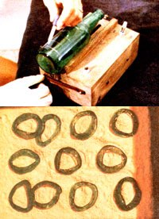
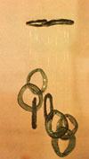

Judy Sizemore reveals a cash-producing craft for theecology-minded
Six years ago, when I was first trying to earn a living as apotter in New England, I ran up against an almost insurmountableproblem: It seems many other talented people had also decided tomake careers in ceramics, and the competition was fierce! Indeed,I spent more time selling my wares than making them . .. and barely broke even at that! I soon started to wonder if mysecondhand electric kiln had been a good investment afterall.
Then, almost accidentally, I "discovered" a product so unusualthat I had absolutely no competition to contend with.The success story began when a friend offered me a bottle cutterfor which she had no use. I almost turned her gift down, butluckily I recalled reading about a craftsperson whohad-with the help of a kiln-made glass wind chimesfrom bottles . . . so I decided to experiment.
A SURPRISING SUCCESS
It took a while to figure out the process, but I was soon ableto produce the melody-makers at an astonishingly rapid rate.Better still, my raw material could be found littering anyroadside, beach, or picnic area . . . so I knew I'd be able tooffer my goods at attractively low prices.
The shiny, translucent, colorful chimes were beautiful, too .. . and the clear, melodic ring they made as they struck eachother was delightful! I didn't know, however, whether amarket existed for the products. There was, of course,only one way to find out: I made 50 of the pretty breeze bells invarious sizes ... priced them from $5.00 to $15 . . . and tookthem to a fair. There, I put up a display and a sign that read"Recycled Wind Chimes", and-though the festival was atwo-day event-I was sold out by the end of thefirst day! It seems people were particularly attractedby the fact that my handiwork was made from what would otherwisehave been unsightly trash.
Greatly encouraged, I made the rounds of local craft storesand discovered that the chimes could also sell very well in thewholesale market. Indeed, my product would just about marketitself!
At first, I had to work five days a week to bring in $100 inprofits (it took me four days to make the chimes and one day tosell them). Now, however, I deal exclusively wholesale, and mymarkets are so well established that I don't have to sell at all... I just fill orders. Therefore, I have to work only four daysa week for my $100, which leaves plenty of time for other crafts,including my pottery.
For five years now-probably because I still remember thecompetition that brought about my lean New England days-I've jealously guarded the secrets of my craft. I was afraid, yousee, that too many chimemakers would flood the market and put meout of business . . . but I've finally decided that this area ofceramics has more than enough room for others. So, if you'd liketo try your hand at a creative craft and help to clean up theenvironment while you do so, here's how to go about it.
EQUIP YOURSELF
First, I strongly recommend that you buy, borrow, or barterfor an electric kiln. A gas, wood, or coal burnercan be used for the process, but-with such adevice-you'll have to bake in a muffle (an inner chamberwhich protects the glass from flames and gases). Fortunately,your kiln doesn't have to be a particularly costly unit, becauseit has to reach only 1500°F (pottery requires highertemperatures). You'll also need several shelves and somefour-inch posts . . . which can be cut from soft firebrick.
And, while a kiln may cost you a bit of money, the only otherpiece of equipment needed is a bottle cutter. I was lucky enoughto be given an electric unit made by American Handicrafts,which-I'm sorry to say-is no longer produced. Thereare, however, still a few stocked in some stores, so you mightwant to write the company (American Handicrafts and MerribeeNeedle Arts, Dept. TMEN, P.O. Box 791, Fort Worth, Texas 76107)for a list of its dealers. (Since the tool is a discontinueditem, you may be able to purchase it for less than the regular$17.95 retail price.) Otherwise, you can simply buy a manualbottle-cutter kit at most any crafts store for around $10 or$12.
(If you do happen to get hold of an electric glass cutter,your hot-wire will-eventually-burn out. It can bespliced back together once by twisting the two broken endstightly around each other. When it burns out a second time,however, get a new one ... some outlets have put the wires onsale for 39 cents apiece. Occasionally, you'll also have to takethe cutter apart and clean the electrical connections, but thejob can be avoided if you replace all the nuts and bolts withnoncorroding brass parts.)
Then, besides the free-for-the-gathering bottles, you'll needa spool of 12-pound-test monofilament fishing line to tie yourchimes together with, and calcium carbonate (also known as"whiting") to prevent them from fusing to the kiln shelves asthey're fired. The powdery substance can be used over and overagain indefinitely, and is available from stained glasssuppliers. (For example, Whittemore-Durgin-Dept. TMEN, 825Market Street, Rockland, Massachusetts 02307-sells twopounds for $2.31 plus postage.)
BOTTLE RECYCLING
The first step in making wind chimes, of course, is to gatherup bottles ... soak 'em in hot water . . . and scrub away thelabels (make certain that you remove all the glue underthe "wrapping", too, or your glass will have a frostedappearance) and dirt . . . although I find it's easier to finishcleaning the inside of the containers after theirbottoms have been cut off.
Actually, you don't really "cut" the bottles ... you just makethem break apart, and-no matter what kind of kit you'reusing-the principle remains the same.
Wearing work gloves to avoid burns and cuts, use adiamond-tipped tool to score a line around the bottle at eachpoint where you want it to break. Space the scored ringsapproximately one inch apart, except for those made on champagneand other very thick wine bottles ... which can be as close ashalf an inch.
Then, with a candle flame or other heat source (in the case ofmy cutter, a hot electric wire), you heat up the score line . . .apply ice water with an eye dropper . . . and the sudden changein temperature will cause the glass to crack. All you have to dothen is grasp that section and break it off. (Sometimes the coldliquid makes the glass fracture so suddenly that a ring will popoff by itself, so be alert and ready to catch the piece if thisshould happen.)
Once the bottom is off the bottle, you can wipe the dirt fromthe inside with a rag or paper towel, but be extremelycareful, because the sharp edges can give you a nastygash!
LOAD AND FIRE
With your rings cut, it's time to cover the kiln floor and allthe shelves with a good layer of calcium carbonate. Next placethe glass doughnuts in the kiln . . . making sure they're about1-1/2 inches apart in all directions and the same distance fromany posts and from the shelves' edges. Because hot air rises, thebottom of the kiln will stay a little bit cooler than the top,and-since brown glass will "slump" (or melt and collapseinto the appealing shapes shown in the photos) at a slightlylower temperature than other colors-it should go on thefloor and lower shelves ... clear glass should then be placed inthe middle ... and green up above.
If you want to fuse two or more pieces together (as I often doto form the top segment of the wind chime), place one glass ringso that its edge overlaps the rim of another (of either the sameor a different color). Double-ring combinations mustin order tofuse the two pieces-always be placed on the very topshelf ... as should any extra-thick circles.
Now you're ready to fire your glass. Unlike pottery, whichmust be baked slowly with the temperature rising gradually,bottle glass tends to be weakened by slow heat. Therefore, turnthe kiln up to "high" right away.
It'll take between two and three hours to complete this firingoperation, and visual inspection-via the kiln'speephole-is the only way to tell when the load is "done".(It's best if you can see the rings on the kiln floor, sincethey'll be the last to flatten.)
Always remember to let the kiln cool completely before youopen it. As a general rule, the cooling process takes three timesas long as the firing. At that point, remove the rings and dustoff as much of the whiting as possible. (I always unload andreload in one operation ... to save time.)
Once you've washed the little gems, they're ready to be strungin whatever fashion your imagination conceives. You can, forexample, use two or three fused rings for the top of the windchimes . . . or employ lengths of driftwood, branches, bamboo,etc. for this purpose. The glass circles can also be used asChristmas ornaments, and they add a distinctive touch to macrame.(I supply one woman who works the rings intoglass-and-macramé lamp shades.)
I use about 120 bottles a week to make my hot-selling chimes,and I wish I could say that I'm close to running out of material.Unfortunately, there're so many litterbugs that I always have afresh supply.
I bet there's a bunch of bottles cluttering up yourneighborhood, too, just waiting for some clever recycler to turnthem into tinkling wind songs . . . and cash!
|
 |
 |
|